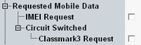

Requested Mobile Data
The "Requested Mobile Data" section defines which parameters of the mobile station are requested, e.g., during location update or GPRS attach. Some of the requested information is displayed in the "MS Info" section or "MS Capabilities" section of the "GSM Signaling" main dialog. A restriction of the requested information can accelerate the location update or attach procedure.

Requested mobile data settings
Request of the international mobile equipment identity (IMEI).
Remote command:Activates/deactivates classmark 3 information element as specified in 3GPP TS 24.008, section 10.5.1.7.
During the location update procedure, this element requests the supported bands and the power classes from the MS. Sometimes the supported multislot classes are reported by the MS as well.
Remote command: